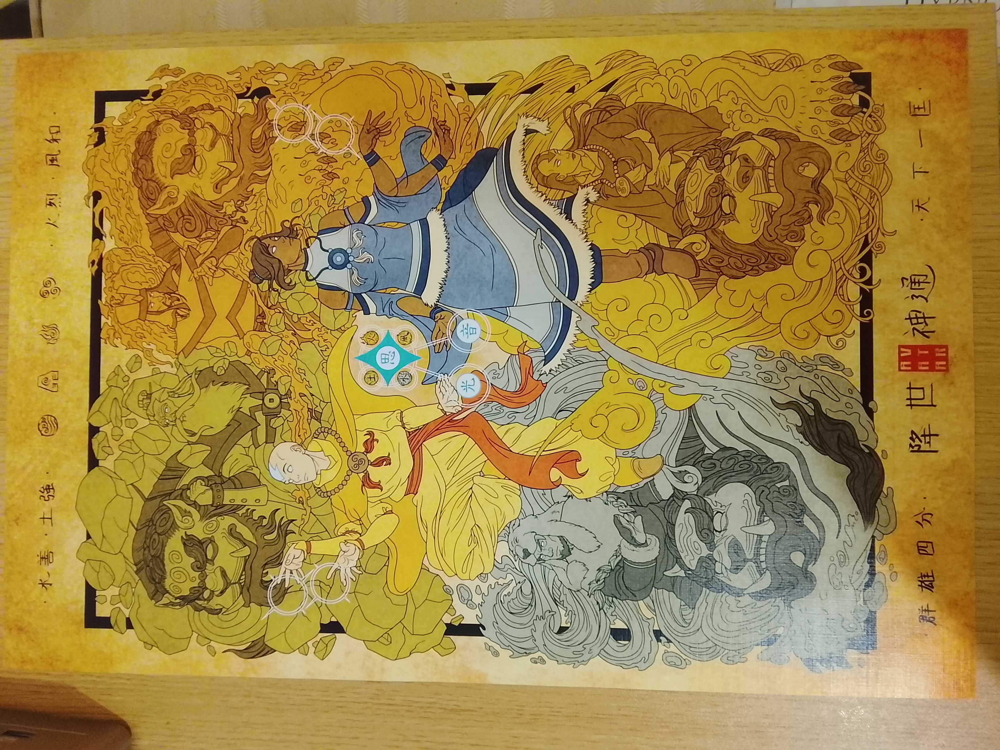
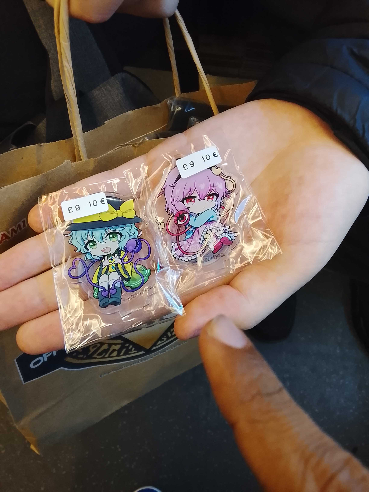
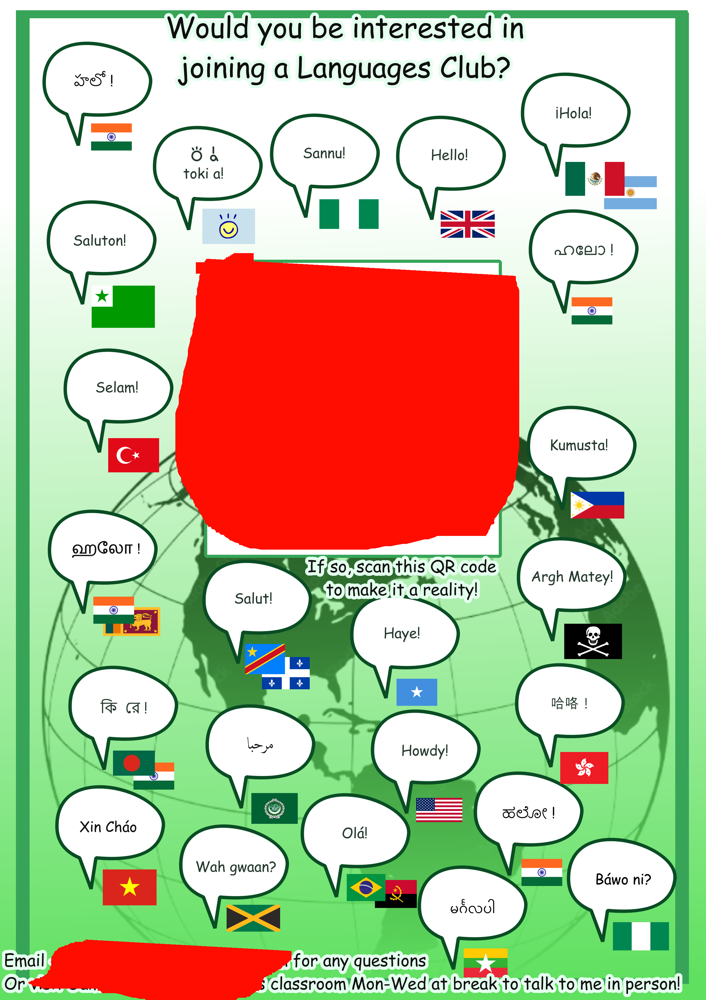

23rd oct 2026
today i went to a convention!

my friend bought me this aang n korra poster
when bringing it come i had to protext the poster from wind and rain which is very poetic if you think about it. the wind put two little creases on aang and thats kind of like representative of the pain the loss of his element and uclture caused him

my friend got two touhou thinges (i should get into the series ive played the first two games and soe m ofmy friends like it
i brought my 3ds and i got FOURTEEN streetpasses in total. the most ive gotten ever is like 2 at once. so cool
i won an award for my class! i was nominated cuz of a Languages Club i tried making and stuck up posters for and it made my description look really good compared to others

avatar seven havens episodes s1 7-9 came out today they were cool
i wont share all my thoughts cuz im lazy but one thing i find interesting is how dirty bending is now, basically anyone who can physically cuff you with their element or bend the floor under you will do so which sometimes happened in last airbender and korra but no where near this amount, its like endgame and beginner bending at the same time